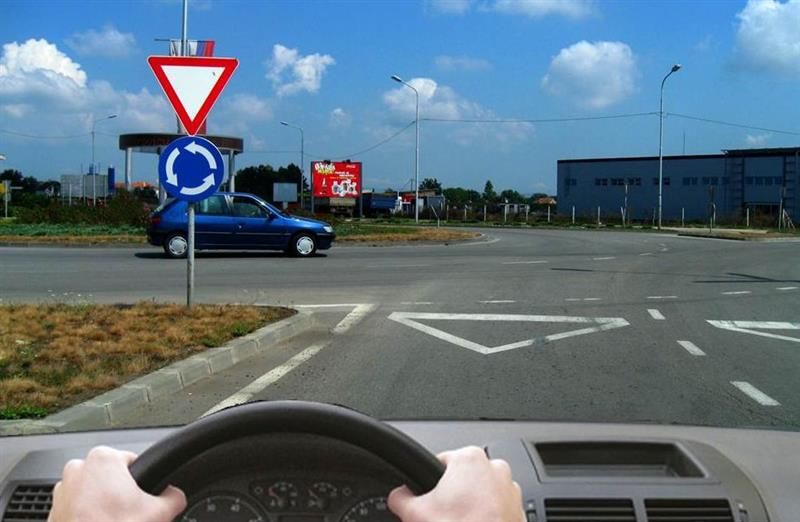

Иерархия сигналов, помеха справа, трамвай и круговое движение.
Порядок проверки перед перекрёстком
Hijerarhija u saobraćaju — иерархия регулирования:
- Указания полицейского, который регулирует движение.
- Светофор, svetlosni saobraćajni znak / semafor.
- Дорожные знаки, saobraćajni znakovi.
- Разметка, oznake na kolovozu.
- Общие правила приоритета, pravila prvenstva prolaza.
Источник: 8 · фр. 6, 9–12. Банк отдельно подтверждает приоритет знака перед противоречащей разметкой (10435), сигнализации перед общим правилом (10434), полицейского перед светофором (10439).
Высший уровень разрешает или запрещает движение, а участники, одновременно получившие разрешение, определяют взаимный приоритет по правилам движения (10438). Фразу лектора «знаки не существуют, когда работает светофор» понимать в контексте приоритета перекрёстка: она не отменяет все остальные ограничения и требования на дороге. Выключенный или мигающий жёлтым светофор не даёт преимущества; проверить знаки и оставшиеся применимые правила. 8 · фр. 9–12, 28, 46.
Два базовых правила
Pravilo desne strane — уступить транспортному средству справа при равном приоритете. Важно положение относительно твоего автомобиля, а не правая сторона рисунка. Не считать свою дорогу главной из-за ширины, привычки или того, что едешь прямо. 8 · фр. 7–8; банк 10459.
Pravilo levog skretanja — при левом повороте уступить встречному, который едет прямо или направо, если регулирование не задаёт иной порядок. Когда два встречных автомобиля оба поворачивают налево и их траектории не мешают друг другу, они могут выполнить манёвр одновременно. Это не разрешение на одновременный проезд любых двух левых поворотов без проверки траекторий. 8 · фр. 7, 11, 38–39; банк 9959.
На одном уровне приоритета правила продолжают действовать: два автомобиля на главной дороге, два на второстепенной, два на зелёный или два с разрешённых боковых сторон регулировщика. Сначала определить разрешённые группы, затем конфликты внутри группы. Зелёный сигнал сам по себе не означает, что при левом повороте можно проехать перед встречным. 8 · фр. 9–11.
Главная дорога, трамвай, круг
Put sa prvenstvom prolaza / sporedni put — главная / второстепенная дорога. При выезде на главную уступить всем, кто имеет перед тобой преимущество на ней. Толстая линия дополнительной таблички показывает её изгиб; «еду прямо» не означает «я на главной». 8 · фр. 9, 39–43.
Трамвай на дороге равной важности имеет преимущество независимо от того, с какой стороны подходит и куда направляется, если регулирование не задаёт иначе. Трамвай со второстепенной не становится главнее автомобиля на главной только из-за рельсов. Это условие лектор подчёркивает в анимациях. Банк 9974 формулирует обязанность пропустить трамвай с оговоркой о знаках. 8 · фр. 39–41.
Kružni tok — круговое движение — само по себе не даёт приоритет тому, кто уже внутри. На въезде со STOP/«уступи» пропускаем имеющих приоритет на круге. Если соответствующего регулирования нет, применяются общие правила: въезжающий может оказаться справа от едущего по кругу. Банк 9986 и 9990 специально даёт разные ответы на две ситуации; искать знаки, а не запоминать «на круге всегда главный». 8 · фр. 43–44.
Лектор также сравнивает одновременное перестроение из разных рядов. Его фраза «всегда правый имеет преимущество» не означает, что любая машина справа вправе вклиниться в занятую полосу. Каждый начинает манёвр после проверки безопасности; отдельный случай — слияние при перекрытой полосе, см. манёвры. 8 · фр. 44–45.
Светофор и безопасность
В лекции зелёный противопоставляется красному для пешеходов. Не превращать рассказ об экзамене в совет ехать на человека: водитель должен предотвратить наезд даже при чужом нарушении. В другом примере лектор прямо требует пропустить пешехода, уже оказавшегося на проезжей части вне перехода. Неожиданная остановка тоже создаёт риск, поэтому заранее наблюдать, снижать скорость при опасности и контролировать обстановку сзади. 8 · фр. 8, 10.
Дополнение банка B 10016: разрешающий светофор не позволяет въехать в забитый перекрёсток, если из-за затора придётся остановиться на нём или переходе и помешать другим. Наличие приоритета не освобождает от этой проверки. Это важное условие для решения вопросов, хотя подробного объяснения в сохранившемся тексте нет.
Поворотник и спорные примеры
Поворот вместе с изгибающейся главной дорогой требует сообщить о повороте: pokazivač pravca, указатель направления. 8 · фр. 43.
Рядом лектор говорит о левом поворотнике при движении «прямо» с главной на второстепенную. Без кадра неизвестна фактическая геометрия манёвра. Нельзя превращать это в правило «при любом прямом съезде с главной включать левый». Учебное правило банка: проверить безопасность и обозначить выполняемый манёвр; вопрос о конкретной траектории нужно разбирать с изображением. 8 · фр. 43–44.
В одной анимации лектор сам отмечает ошибочный порядок с трамваем. Без исходного изображения не восстанавливаем её по цветам машин и не используем названные 1–2 секунды опережения трамвайного сигнала как всеобщее правило работы светофоров. Аналогично предложение въехать в середину перекрёстка и ждать в циклическом конфликте не переносится на любую ситуацию без схемы. 8 · фр. 40–43.
Проверь себя
Вопросы банка B по теме. Сначала реши сам, затем открой перевод или разбор.
B · 10438
2 балл(а) · правильных ответов: 1
Međusobno prvenstvo prolaza učesnika u saobraćaju, koji na raskrsnici svetlosnim saobraćajnim znakovima istovremeno dobijaju pravo prolaza, reguliše se:
- pravilima saobraćaja
- saobraćajnim znakom
- oznakama na kolovozu
Перевод вопроса
Чем определяется взаимный приоритет тех, кто одновременно получил разрешение светофора?
Ответ и ловушка
Правильный ответ: 1.
По-русски: Правилами дорожного движения.
Одновременный зелёный не отменяет правила приоритета
Ловушка: Не возвращаться к знаку главной дороги, чтобы переиграть светофор. После разрешения проезда применяются взаимные правила, например уступание при левом повороте.
Слова в вопросе: istovremeno dobijaju pravo prolaza; pravilima saobraćaja.
B · 10016
2 балл(а) · правильных ответов: 1
Vozač koji želi da prođe kroz raskrsnicu, kada mu je semaforom to dozvolјeno:
- ne sme vozilom da uđe u raskrsnicu, ako će zbog gustine saobraćaja stati u raskrsnici ili na pešačkom prelazu i time ometati ili onemogućiti saobraćaj vozila, odnosno pešaka
- može vozilom ući u raskrsnicu i zbog gustine saobraćaja stati na pešačkom prelazu, ako je pešacima semaforom zabranјen prolaz
- mora vozilom da uđe u raskrsnicu, bez obzira na gustinu saobraćaja, da ne bi ometao vozila koja se kreću iza nјega
Перевод вопроса
Можно ли въехать на разрешающий сигнал, если из-за затора остановишься на перекрёстке или переходе и помешаешь другим?
Ответ и ловушка
Правильный ответ: 1.
По-русски: Нельзя.
Зелёный не разрешает блокировать перекрёсток
Ловушка: Давление потока сзади и красный пешеходам не дают права заранее заблокировать перекрёсток.
Слова в вопросе: zbog gustine saobraćaja; ne sme da uđe.
B · 9974
2 балл(а) · правильных ответов: 1
Na raskrsnici ili u susretu sa tramvajem, vozač:
- je dužan da propusti tramvaj u svim slučajevima, ako saobraćajnim znakom nije drugačije određeno
- ima u svim slučajevima prvenstvo prolaza u odnosu na tramvaj, ako saobraćajnim znakom nije drugačije određeno
- jedužan da propusti tramvaj, samo ako dolazi sa nјegove desne strane
Перевод вопроса
Какое правило действует при встрече с трамваем на перекрёстке или дороге?
Ответ и ловушка
Правильный ответ: 1.
По-русски: Пропустить трамвай, если дорожным знаком не определено иначе.
Трамвай не только справа
Ловушка: Вариант «только когда справа» неверен; но оговорку о другом регулировании тоже нельзя убрать.
Слова в вопросе: tramvaj; ako saobraćajnim znakom nije drugačije određeno.
B · 9986
2 балл(а) · правильных ответов: 1
U situaciji prikazanoj na slici:

- dužni ste da propustite vozilo koje Vam dolazi sa leve strane
- imate prvenstvo prolaza u odnosu na vozilo koje Vam dolazi sa leve strane
Перевод вопроса
Как поступить в показанной ситуации на въезде в круг?
Ответ и ловушка
Правильный ответ: 1.
По-русски: Пропустить машину слева.
На въезде со знаком уступить кругу
Ловушка: Перед въездом видны перевёрнутый треугольник и разметка уступания. Именно они определяют ответ; одного синего круглого знака недостаточно для этого вывода.
Слова в вопросе: dužni ste da propustite; sa leve strane.
B · 9990
2 балл(а) · правильных ответов: 1
U situaciji prikazanoj na slici:
- imate prvenstvo prolaza u odnosu na vozilo koje Vam dolazi sa leve strane
- dužni ste da propustite vozilo koje Vam dolazi sa leve strane
Перевод вопроса
Кто имеет приоритет в показанной ситуации перед машиной слева?
Ответ и ловушка
Правильный ответ: 1.
По-русски: У вас преимущество перед машиной слева.
Круг сам по себе не даёт приоритет
Ловушка: В этом изображении нет знака уступания на вашем въезде. Применяется правило правой стороны: вы справа от машины на круге. Сравни с отдельным вопросом со знаком уступания.
Слова в вопросе: imate prvenstvo; sa leve strane.